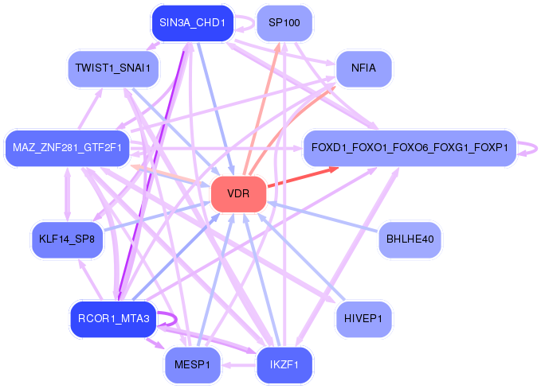

<object data="../networks/VDR.svg"
type="image/svg+xml"
width="659px"
height="416px">

<h3>In order to view interactive SVG image please either update your browser to latest version or install SVG plugin.</h3>
</object>
<br />

<a href="../networks/VDR.svg">View svg image</a>
<br/>
<a href="../networks/VDR.png">View png image</a>
